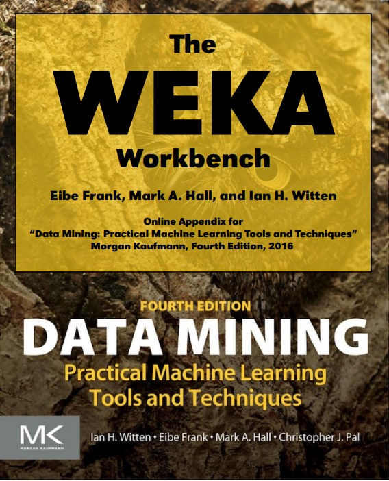

Unit 6 learnings
Hi colleagues
Unit 6 Introduced practical lessons introducing the WEKA tool. The class was introduced to loading datasets, converting them into .arff format files, and testing various algorithms on the dataset.
Collaborative learning discussion 2 also got underway with my topic being the discussion of two machine learning algorithms and the context ion which they can be used. During the discussion many of my peers
mentioned decision trees as a supervised training method in which decision made are easy to understand, as the tree is fairly simple to visualize with small datasets. Many of my peer posts such as (Dewaji, 2022), including my own
had also made mention of the efficiency of decision tree based algorithms.
Many methods of unsupervised learning methods were mentioned, notably (Kanakavelu, 2022) who elaborated on the k-means clustering algorithm, with selection of hyperparameter tuning such as k, and
Lukashevich, 2022) who noted the "Black box" nature deep neural networks can have, which make it difficult to explain predictions.
My initial post:
Decision trees provide a simple supervised learning method of data classification (Bell, 2020) and enables ease in visualising instance attribute nodes at the root of the tree, down to the various classes (Wikipedia, 2022). Another positive attribute for the use of decision trees is that do not require high end processing power and handle large datasets well (Bell, 2020).
Decision trees however have a few drawbacks. Over fitting can occur if all training data is used to train the system, which then memorises the noise and fails to interrogate important patterns (Kumar, 2021). It is for this reason various algorithms (such as C4.5, CART, OC1) use a technique called pruning, where the algorithm allows the tree to grow to maximum size, then prunes the tree. In C4.5, this is done by replacing branches with leaves until a reduction of predicted error rate is seen, and with CART and OC1 algorithms for example, using only a portion of the training sample to prune the tree (Podgorelec, et al., 2002).
Decision trees are well suited for data which is labelled, and have recurring, well defined problems which must be solved, such as spam detection, weather forecasting, or medical diagnosis through result data (Delua, 2021). In a study by (Nahar & Ara, 2018) on liver disease prediction, decision tree algorithms were chosen as they had better accuracy in results over other algorithms and were able to handle large datasets more easily.
Association rules learning method is an unsupervised learning method designed to find pertinent relationships among elements of data (Bell, 2020). Usually, unsupervised methods are applied to very large datasets, for instance, (Basset, et al., 2018) show some types input data, stating that Googles receives 1 billion queries per day, and YouTube counts up to 4 billion views per day of data. This is more data than a human can easily process to gain insight.
Some drawbacks of association rules are algorithmic performance (which will affect computing efficiency), and generation of large output sets as many item-sets may be non-frequent, but add load to process and eliminate them. New methods already exist to ensure non interesting datasets are pruned, such as MONPNAR which uses a pareto based algorithm to prune rules, or MDS-H which employs a grouping mechanism to prevent non frequent item-sets (Ghafari & Tjortjis, 2018).
Much use of the association rules machine learning method is found in customer purchasing decisions, website data mining, and mining learning management systems (LMS), to find patterns and trends (Son, et al., 2018).
In conclusion, unsupervised learning uses machine learning algorithms which cluster and analyse unlabelled datasets to interpret data where correlations are otherwise not yet known. Supervised learning predicts outcomes based on labelled datasets which have been empirically gathered to predict outcomes for new input datasets. Please add further techniques or methods which can also give increased productivity of machine learning systems.
References:
Basset, M. . A., Mohamed, M., Smarandache, F. & Chang, V., 2018. Neutrosophic Association Rule Mining Algorithm for Big Data Analysis. Symmetry, 10(4), p. 106.
Bell, J., 2020. Machine Learning: Hands-On for Developers and Technical Professionals. 2nd ed. Chichester: Wiley.
Delua, J., 2021. Unsupervised Learning: What’s the Difference?. [Online] Available at: https://www.ibm.com/cloud/blog/supervised-vs-unsupervised-learning [Accessed 10 04 2022].
Ghafari, S. M. & Tjortjis, C., 2018. A survey on association rules mining using heuristics. Data Mining and Knowledge Discovery, 9(4), pp. 1-29.
Kumar, S., 2021. 3 Techniques to Avoid Overfitting of Decision Trees. [Online] Available at: https://towardsdatascience.com/3-techniques-to-avoid-overfitting-of-decision-trees-1e7d3d985a09 [Accessed 10 04 2022].
Nahar, N. & Ara, F., 2018. Liver Disease Prediction by Using Different Decision Tree Techniques. International Journal of Data Mining & Knowledge Management Process, 8(2), pp. 01-09.
Podgorelec, V., Kokol, P., Stiglic, B. & Rozman, I., 2002. Decision trees: an overview and their use in medicine. Journal of Medical Systems, 26(5), pp. 445-463.
Son, L. H. et al., 2018. ARM-AMO: An Efficient Association Rule Mining Algorithm Based on Animal Migration Optimization. Knowledge-Based Systems, Volume 154, pp. 68-80.
Wikipedia, 2022. Decision tree learning. [Online] Available at: https://en.wikipedia.org/wiki/Decision_tree_learning#:~:text=A%20decision%20tree%20is%20a,classification%20is%20called%20a%20class. [Accessed 10 04 2022].
The WEKA workbench, (Frank E, et al., 2016) presented an excellent practical introduction to WEKA, and would go on in later units to expand in later chapters. Chapter 1 focussed on what the user can do with WEKA, and how the package management system works.